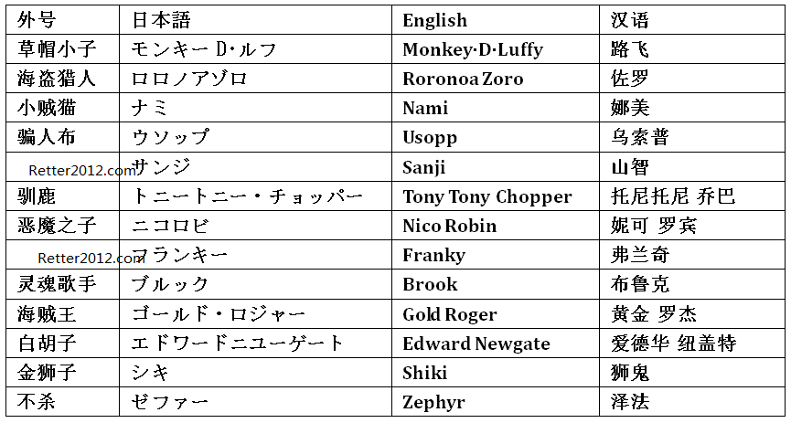

返回主页
ONE PIECE's Pirates

地中海（太平洋）争霸
德雷克海盗时代
ONE PIECE
全部图片索引
ONE PIECE FILM Z （2012）
Avril Lavigne(艾薇儿)-Bad Reputation
安倍晋三的日本：我只是按照自己的方式行事。男人在自己的人生里完成了自己的信念，不是很酷吗？
1940年8月，罗斯福总统宣布禁止向日本出口航空汽油。10月16日，美国宣布对日本禁运生铁和钢材。
1941年4月13日，日本和苏联签订了互不侵犯的中立条约，在条约中他们互相承认满洲国和外蒙古，这是原来中国版图上的两大块。
1941年4月15日，罗斯福总统宣布，美利坚合众国将按照租借法案中对待英国和希腊的同样条件，向中国提供战略物资。
1941年11月26日，美国国务卿赫尔（Cordell Hull）向日本递送了一份备忘录，要求日本放弃在中国的全部军事占领，撤出中国。
1941年12月7日，日本海军山本五十六突袭珍珠港。日美宣战。日本为了进口资源和海外市场，连美国都敢打！
当真为了生存，连死都不怕！
version:1.0; jobnet@188.com © retter2012.com